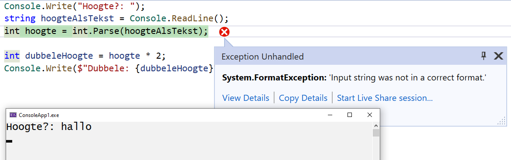

Programmeren Basis - Deel 05¶
1. Numerieke invoer robuust opvangen¶
1.1. Parse kan leiden tot runtimefouten¶
Op de console vangen we de invoer van de gebruiker op aan de hand van Console.ReadLine(). Deze functionaliteit levert ons een tekst (string) op.
In sommige gevallen wordt echter numerieke informatie ingevoerd, en wensen we die ingevoerde waardes in te zetten in een berekening. Op dat moment hebben we -tot dus ver- gebruik gemaakt van int.Parse() of double.Parse() om de string waarde in int of double vorm om te zetten.
We lopen hierbij het risico dat de gebruiker een reeks van karakters gaat invoeren die voor int.Parse() of double.Parse() niet omzetbaar zijn, bijvoorbeeld de tekst "hallo". Een runtimefout, bijvoorbeeld een FormatException of OverflowException, treedt in dat geval op. Indien onze code daar niet op voorzien is crasht onze applicatie.
Voorbeeld van onveilig invoer opvangen met Parse
Console.Write("Hoogte?: ");
string hoogteAlsTekst = Console.ReadLine();
int hoogte = int.Parse(hoogteAlsTekst);
int dubbeleHoogte = hoogte * 2;
Console.Write($"Dubbele: {dubbeleHoogte}");
Indien er 10 wordt ingevoerd verloopt alles naar wens…
Bij de invoer van hallo loopt het echter grondig fout…

Bij een runtimefout, exception ook wel genoemd, breekt het programma af.
Tip: Raadplegen van exception informatie, en terugkeren naar editeer modus.
Visual Studio schakkelt indien een exception optreedt naar debugging modus, en markeert welke instructie het probleem heeft veroorzaakt. Vooral de naam van de exceptie, FormatException bijvoorbeeld, en de additional information bieden ons informatie over wat nu precies fout liep.
Om terug te keren naar editeer modus kies je in Visual Studio voor Debug › Stop Debugging.
Runtimefouten die int.Parse() en double.Parse() ons opleveren, kunnen we vermijden aan de hand van int.TryParse() en double.TryParse().
1.2. TryParse oplossing¶
int.TryParse() en double.TryParse() leveren geen exceptions op, maar signaleren of de conversie slaagt.
Op basis van die indicatie (slagen of falen van de conversie) kan het programma zijn verdere verloop bepalen. Op die manier kunnen we op veilige wijze (zonder de vrees voor exceptions) string informatie proberen om te zetten in int of double vorm.
Aan TryParse() geef je…
-
de om te zetten
stringwaarde mee -
de variabele mee waaraan het omgezette resultaat wordt toegekend
TryParse() signaleert vervolgens met een bool waarde of deze omzetting is gelukt…
-
truewordt opgelevert als de omzetting slaagt -
falseindien deze faalt
Voorbeeld van veilig invoer opvangen met TryParse
In de console numerieke invoer opvangen bijvoorbeeld, kan zo eindelijk ook op robuuste wijze.
Console.Write("Getal?: ");
string getalAlsTekst = Console.ReadLine();
int getal;
bool invoerOk = int.TryParse(getalAlsTekst, out getal);
if (invoerOk) {
Console.Write($"Je hebt int waarde {getal} ingevoerd.");
} else {
Console.Write("Gelieve een geheel getal in te voeren.");
}
De tekst die wordt omgezet zit in onze eerste argumentwaarde getalAlsTekst, na de komma geven we aan dat in de variabele getal de output (out) van onze conversie mag komen.
Deze aanroep (int.TryParse(getalAlsTekst, out getal)) levert een bool waarde op die vervolgens aan invoerOk werd toegekend.
Op basis van deze bool waarde laten we het programma met een if statement beslissen hoe het verder wil.
Indien we het voorbeeld uitvoeren en de gebruiker de waarde 123 invoert en op Enter drukt, dan krijgen we volgende output…
Merk op dat de omgezette waarde, na het aanroepen naar TryParse(), ook effectief in de variabele getal is terechtgekomen.
Indien we het voorbeeld uitvoeren en de gebruiker de waarde hallo invoert, dan krijgen we volgende output…
Deze keer breekt het programma niet af (er treed immers geen exception op), maar de foutsituatie wordt netjes afgehandeld.
In tegenstelling tot Parse levert TryParse dus geen omgezette waarde op, maar een bool. Een ander mechanisme (een output parameter) wordt door TryParse gebruikt om aan de aanroepende code de omgezette waarde door te geven. Het out sleutelwoord moet vermeld worden voor de naam van je output variabele. Anders uitgedrukt: voor de naam van de variabele waaraan je het omgezette resultaat wil toekennen.
Waarschuwing
Het gebruik van out (output parameters) is niet aan te raden. Ze verminderen ondermeer de leesbaarheid van onze code. Hier hebben we echter geen keuze, de
TryParse()varianten werken nu éénmaal zo.Erg vaak worden ze niet ingezet, het gebruik ervan voelt immers geforceerd aan. Het verzorgt de mogelijkheid compact te coderen.
TryParse()bijvoorbeeld kan zo meerdere resultaten opleveren; zowel het signaal van slagen of falen, als het omgezette resultaat.
2. Herhalingen¶
Bij het opstellen van een verzameling van instructies, of het nu een algoritme is, een wegomschrijving, of een recept voor een gerecht, combineren we verschillende controlestructuren. We spreken we in deze verzamelingen van instructies niet alleen in termen van sequenties en selecties, ook herhalingen komen van pas.
Misschien kan je nog de drie eerder aangehaalde controlestructuren herinneren…
-
sequentie : opdrachten uitvoeren in de volgorde waarin ze in de broncode staan
-
selectie : stukken code wel of niet uitvoeren (op basis van één of andere voorwaarde)
-
iteratie : stukken herhalen (weerom afhankelijk van een voorwaarde)
Herhalingen, ook wel iteraties genoemd, kwamen nog niet aan bod. Ze stellen ons in staat aan te geven dat bepaalde stappen worden herhaald, zolang op zijn minst voldaan is aan een bepaalde voorwaarde.
Dit kan ondermeer met do while statement…
Het code block, vervat tussen de do en while sleutelwoorden, en omsloten met accolades, bevat de te herhalen stappen. Zolang de voorwaarde klopt wordt er effectief herhaald. Het code block wordt in zo’n geval van bij het begin opnieuw uitgevoerd.
De voorwaarde wordt net als in een if statement met een bool expressie gevormd.
Merk ook op dat na de while clausule van dit do while statement een ; wordt verwacht.
Analogie¶
Het meermaal kunnen herhalen van dezelfde instructie biedt ons heel wat flexibiliteit, bijvoorbeeld…
-
In een wegomschrijving: rij door tot aan de molen; wordt de stap "rij door" herhaald. Dit zolang je "nog niet aan de molen bent".
-
In een recept: roer alle gesmolten boter beetje voor beetje door het deeg; wordt de stap "een beetje gesmolten boter door het deeg roeren" herhaald. Deze keer zolang "er nog boter overblijft".
2.1. Controlestructuur : do while¶
Ook in onze eigen algoritmes zijn herhalingen bruikbaar.
Voorbeeld zonder herhalingsstructuur
Wensen we elk jaartal uit de jaren negentig af te drukken, dan kunnen we in principe werken met een opeenvolging van gelijkaardige instructies…
Console.WriteLine("1990");
Console.WriteLine("1991");
Console.WriteLine("1992");
Console.WriteLine("1993");
Console.WriteLine("1994");
Console.WriteLine("1995");
Console.WriteLine("1996");
Console.WriteLine("1997");
Console.WriteLine("1998");
Console.WriteLine("1999");
Indien we het voorbeeld uitvoeren dan krijgen we volgende output…
Het werken met een sequentie van gelijkaardige instructies is hier nog net haalbaar.
Maar stel je eens voor dat we alle jaartallen uit de twintigste eeuw wensen af te drukken (van 1900 tot en met 1999). Dan wordt het erg omslachtig dit louter aan de hand van een sequentie op te lossen. Dergelijke aanpak is weinig flexibel, kan moeilijk overweg met veranderende omstandigheden.
Of nog erger, stel je voor dat we alle jaartallen willen afdrukken tot en met een door de gebruiker ingevoerd jaartal. Hierbij is zelfs onmogelijk dit louter aan de hand van een sequentie op te lossen.
Voorbeeld met herhalingsstructuur
Indien we alle getallen van 1990 tot en met 1999 wensen af te drukken kan dit vrij eenvoudig aan de hand van een do while statement.
Telkenmale wordt een getal afgedrukt. Dit getal is niet steeds dezelfde. Nog voor we het getal opnieuw afdrukken, wensen we het te verhogen met één…
1 : int jaar = 1990;
2 : do {
3 : Console.WriteLine(jaar); // (1)
4 : jaar = jaar + 1; // (2)
5 : } while (jaar <= 1999); // (3)
-
Telkens wordt een variabel getal afgedrukt.
-
Niet hetzelfde getal, maar een getal die telkens met één verhoogt.
-
Deze twee stappen blijven we herhalen zolang de variabele een waarde bevat die kleiner is dan, of gelijk aan, 1999.
Indien we het voorbeeld uitvoeren bekomen we opnieuw volgende output…
Het gebruik van een variabele expressie jaar brengt hier oplossing. Het is deze die steeds, bij elke uitvoering van de herhalingsbody met één wordt verhoogd.
Men gebruikt wel eens de term body voor de verzameling van instructies die worden geherhaald. Dit is het code block dat tussen de accolades tussen do en while is komen te staan.
Tip
Wens je deze keer alle jaartallen uit de twintigste eeuw af te drukken, dan kan je natuurlijk eenvoudigweg de startwaarde 1990 in 1900 aanpassen.
We zouden het verloop van de waarde in jaar met een traceertabel kunnen schetsen…
| Regel | waarde van jaar |
|---|---|
| 1 | 1990 |
| 2 | 1990 |
| 3 | 1990 |
| 4 | 1991 |
| 5 | 1991 |
| 3 | 1991 |
| 4 | 1992 |
| 5 | 1992 |
| … | … |
Regels 3, 4 en 5 worden herhaald, zolang jaar althans niet groter wordt dan 1999. Telkens na de uitvoer van regel 4 wordt onze variabele met één verhoogd.
| … | … |
| 3 | 1998 |
| 4 | 1999 |
| 5 | 1999 |
| 3 | 1999 |
| 4 | 2000 |
| 5 | 2000 |
Pas op het moment dat jaar de waarde 2000 krijgt, breekt onze herhaling af. Pas dan is het immers zo dat de voorwaarde jaar <= 1999 naar false zal evalueren.
Sommige herhalingen kan je nog uitschrijven aan de hand van een sequentie, hier had dit nog net mogelijk geweest…
int jaartal = 1990;
Console.WriteLine(jaartal);
jaartal = jaartal + 1;
Console.WriteLine(jaartal);
jaartal = jaartal + 1;
Console.WriteLine(jaartal);
jaartal = jaartal + 1;
...
Je merkt echter hoe weinig elegant deze oplossing is. Laat staan dat je op deze wijze alle jaartallen uit de twintigste eeuw wil afdrukken.
Soms helpt het echter daadwerkelijk eerst de instructies in sequentie uit te schrijven. Eens je daar in slaagt weet je immers wat nu eigenlijk herhaald wordt. Of wat er met andere woorden in de body van de herhaling moet komen.
Merk je op een bepaald moment dat bepaalde instructies op identieke wijze worden herhaald, dan weet je meteen wat in de body van de iteratie kan komen. Hier is het uiteraard het stuk…
…die de body zal vormen.
Eerst het 'wat', daarna het 'hoelang'¶
Denk eerst aan wat je wil herhalen, bepaal pas daarna hoelang je dit wil herhalen. De volgorde van de instructies in de body van de herhaling heeft vaak invloed op de manier waarop je de herhalingsvoorwaarde moet formuleren.
Voorbeeld met focus op het 'wat' en het 'hoelang'
Indien we eerst afdrukken, om pas daarna te verhogen, moet onze voorwaarde met die verhoogde waarde rekening houden…
int jaar = 1990;
do {
Console.WriteLine(jaar); // (1)
jaar = jaar + 1; // (2)
} while (jaar <= 1999);
-
Eerst afdrukken, …
-
…daarna verhogen.
Ook als jaar 1999 is, moet dit jaartal nog eens worden afgedrukt. Dat is hier ook zo, jaar <= 1999 evalueert dan immers naar true, wat maakt dat de herhalingsbody nogmaals wordt uitgevoerd.
Ga je de instructies in de body omwisselen, dan moet je ook de voorwaarde hierop aanpassen…
int jaar = 1989;
do {
jaar = jaar + 1; // (1)
Console.WriteLine(jaar); // (2)
} while (jaar < 1999);
-
Deze keer: eerst verhogen…
-
…daarna afdrukken.
De herhalingsbody mag niet meer worden uitgevoerd vanaf jaartal 1999, want deze waarde verhoogd met één mag uiteraard niet worden afgedrukt. Om die reden is het noodzakelijk dat dit jaartal kleiner blijft dan 1999.
Waarschuwing
Beide oplossingen leveren een correct resultaat, bij beide worden de jaartallen 1990 tot en met 1999 afgedrukt. De laatste oplossing is echter minder optimaal, de code kan al snel de lezer verwarren. De initialisatie
jaar = 1989suggereert dat we eerst met het jaartal 1989 iets gaan aanvangen, de voorwaardejaar < 1999suggereert dat we slecht tot en met jaartal 1998 aan de slag gaan. En eigenlijk klopt dat ook, maar op zijn minst zijn deze suggesties misleidend. Pas op het moment dat de lezer ziet dat het jaartal eerst wordt verhoogd, pas daarna wordt afgedrukt, begrijpt de lezer dat het eerst afgedrukt getal niet 1989 zal zijn, maar 1990.De eerste oplossing, met initialisatie
jaar = 1990en voorwaardejaar <= 1999, is op dat vlak beter leesbaar. Het heeft immers nergens een misleidende indruk.
Het is ondertussen duidelijk dat het bepalen van het wat te herhalen voorafgaat aan het bepalen hoelang te herhalen.
Schrijf met andere woorden eerst de body van je herhaling uit, nog voor je al te lang stilstaat bij de voorwaarde.
2.2. Noodzaak aan herhalingsstructuren¶
Indien je de herhalingsbody geen vast -op voorhand gekend- aantal keer wil uitvoeren, is een sequentie compleet uitgesloten.
Je zal in dat geval geen andere mogelijkheid hebben dan het inzetten van een iteratie statement.
Voorbeeld waar iteratie noodzakelijk is
Het afsluitende jaartal (het laatst af te drukken jaartal) zou bijvoorbeeld door de gebruiker kunnen bepaald zijn…
int jaar = 1990;
Console.Write($"Jaartal {jaar} en alle volgende jarentalen, tot en met?: ");
int laatsteJaartal = int.Parse(Console.ReadLine());
do {
Console.WriteLine(jaar);
jaar = jaar + 1;
} while (jaar <= laatsteJaartal);
Indien voorbeeld wordt uitgevoerd, en 1999 wordt ingevoerd bekomen we opnieuw alle jaartallen van 1990 tot en met 1999…
Jaartal 1990 en alle volgende jarentalen, tot en met?: 1999
1990
1991
1992
1993
1994
1995
1996
1997
1998
1999
Je zou hier onmogelijk zonder herhaling hetzelfde resultaat kunnen bereiken. Door x aantal code fragmenten in sequentie te plaatsen, leg je immers vast dat x aantal keer dergelijk code fragement wordt uitgevoerd.
Bij het inzetten van een herhaling daarentegen, kan je op basis van een runtime aspect gaan herhalen. Bijvoorbeeld op basis van een waarde die tijdens uitvoer wordt bepaald.
In ons aangehaalde voorbeeld werd pas tijdens uitvoer van het programma bepaald tot en met welk jaartal we de lijst willen afdrukken. Een stuk code met een herhalingsstructuur, bijvoorbeeld een do while statement, was bijgevolg noodzakelijk.
Oneindige herhalingen¶
We komen pas uit een herhaling op het moment dat de herhalingsvoorwaarde niet meer correct is (naar false evalueert).
Zorg er dan ook voor dat je body iets gaat veranderen aan de informatie (de variabelen) waarop de voorwaarde is gebaseerd.
Voorbeeld van oneindige herhaling
In een algoritme voor het brengen van de getallen 1 tot en met 10 vergeten we onze getal variabele te verhogen…
getal is gelijk aan 1 bij het binnenkomen van de body. De inhoud van getal wordt niet aangepast.
Hierdoor zal de voorwaarde getal <= 10 altijd naar true evalueren, en wordt het getal oneindig vaak afgedrukt.
Andere herhalingsstructuren¶
Naast do while statement kan je ook gebruik maken van statements als while, for of foreach.
while statements komen verderop aan bod.
for en foreach worden in een volgend deel besproken.
3. Invoer herhalen¶
Ook invoer kan herhaald worden. Dit bijvoorbeeld om het verder verloop af te wachten tot een correct omzetbare waarde is opgegeven.
We zouden kunnen blijven vragen om een waarde in te voeren zolang nog geen acceptabele waarde werd ingevoerd.
Voorbeeld van herhalen van invoer
double afstandInMeter;
bool invoerOk;
do
{
Console.Write("Afstand in meter?: ");
invoerOk = double.TryParse(Console.ReadLine(), out afstandInMeter);
} while (!invoerOk);
double afstandInCm = afstandInMeter * 100;
Console.WriteLine($"In cm is dit: {afstandInCm}");
Indien we het voorbeeld uitvoeren en de gebruiker de waardes hallo, wereld en 123 invoert bekomen we…
Steeds opnieuw moet de gebruiker een waarde invoeren. Totdat de conversie van de ingegeven tekst, slaagt. Pas op dat moment zal TryParse() true opleveren.
Indien de gebruiker meteen een getal invoert worden geen instructies herhaald…
Het is pas nadat de eerste tekst werd ingevoerd, dat wordt gecontroleerd of deze tekst omzetbaar is in double vorm.
Opmerking
Bij het gebruik van een
do whilestatement wordt pas na de eerste keer dat de herhalingsbody wordt uitgevoerd, gecontroleerd of deze body nogmaals moet worden uitgevoerd.
4. Herhalingen¶
4.1. Controlestructuur : while¶
Een tweede iteratie statement biedt zich aan…
Opnieuw kan hiermee een stuk code (het code block dat typisch tussen accolades wordt vermeld) worden herhaald. En opnieuw gebeurt dit op basis van een voorwaarde.
Indien de voorwaarde klopt (naar true evalueert) wordt de herhalingsbody (of dus het code block) overnieuw uitgevoerd. Anders uitgedrukt: pas op het moment dat de voorwaarde niet meer klopt (naar false evalueert) geraken we uit de herhaling.
Voorbeeld van while statement
Om alle getallen van 1 tot en met 5 af te drukken kunnen als volgt tewerk gaan…
Soms kan een while ook worden omgevormd in een do while (of omgekeerd), hier is dat het geval…
Beide leveren alle gewenste getallen…
4.2. while versus do while¶
do while met een voorwaarde vermeld na de body , is anders dan een while met een voorwaarde vermeld **voor de body .
-
In het geval van de
do whilezal pas na de eerste uitvoer van de body worden gecontroleerd of men deze nogmaals moet uitvoeren. -
In het geval van een
whilewordt de voorwaarde (ter herhaling van die body) meteen geëvalueerd, nog vóór de body een eerste keer zou worden uitgevoerd.
Opmerking
De body van
do whilewordt minstens één keer uitgevoerd
whilewordt mogelijks nooit uitgevoerd
Ondanks dat beide iteratie statements do while en while enigszins gelijkaardig lijken, beide herhalen ze een code block op basis van een voorwaarde, moet je toch een bewuste keuze gaan maken voor één van de twee.
Liever een while¶
Voorbeeld van het verkiezen van een while
Om alle getallen vanaf een door de gebruiker ingevoerd getal, kleiner dan 10 af te drukken kunnen we als volgt te werk…
Console.Write($"Lijst vanaf getal ... (zolang kleiner dan 10)?: ");
int getal = int.Parse(Console.ReadLine());
while (getal < 10) {
Console.WriteLine(getal);
getal = getal + 1;
}
Bij invoer van 5 bekomen we…
Ook bij de invoer van een (te groot) getal 15 bekomen we een acceptabele uitvoer…
De lijst is leeg, geen enkel getal wordt afgedrukt. Een goed resultaat want 15 maakt geen deel uit van dergelijk lijst.
Werken we hier echter met een do while in plaats van een while…
Console.Write($"Lijst vanaf getal ... (zolang kleiner dan 10)?: ");
int getal = int.Parse(Console.ReadLine());
do {
Console.WriteLine(getal);
getal = getal + 1;
} while (getal < 10);
Dan zal bij 5 het resultaat identiek zijn (aan onze while variatie), maar is onze lijst niet leeg bij de invoer van 15…
Dat is niet het resultaat dat we voor ogen hadden. Zoals we reeds aangaven maakt 15 geen deel uit van dergelijke lijst.
Getal 15 werd toch afgedrukt omdat pas na het verhogen van dit getal (waarbij het 16 werd) werd opgemerkt dat het getal niet meer kleiner is dan 10.
We zouden al een if moeten bouwen rond onze do while om alsnog een correct resultaat te bekomen…
Console.Write($"Lijst vanaf getal ... (zolang kleiner dan 10)?: ");
int getal = int.Parse(Console.ReadLine());
if (getal < 10) {
do {
Console.WriteLine(getal);
getal = getal + 1;
} while (getal < 10);
}
Zo vermijden we dat het ingevoerde getal, los van zijn verhouding ten opzicht van 10, wordt afgedrukt. Opnieuw bekomen we invoer van 15 een correct resultaat…
Deze aanpak is echter complexer door de extra if, dus we verkiezen een while.
Je kan het zo bekijken, een while als…
…komt overeen met een do while als…
Om een extra -voorafgaande- controle te vermijden, verkiest men een while boven een combinatie van if en een do while.
Liever een do while¶
Maar soms maak je bewust de omgekeerde keuze.
Voorbeeld van het verkiezen van een do while
Pas na de keuze al dan niet nog een lengte om te zetten, is het zinvol te controleren of "ja" werd ingevoerd…
string nogEenLengteOmzetten;
do {
Console.Write("Lengte in km?: ");
double lengteInKm = double.Parse(Console.ReadLine());
double lengteInMijl = lengteInKm * 0.621371;
Console.WriteLine($"{lengteInKm} km = {lengteInMijl} mijl");
Console.Write("Nog een lengte omzetten (\"ja\" om te herhalen)?: ");
nogEenLengteOmzetten = Console.ReadLine();
} while (nogEenLengteOmzetten == "ja");
Het valt ook op hoe je enorm veel code moet herhalen om hetzelfde resultaat te bereiken met een while statement…
double lengteInKm;
double lengteInMijl;
string nogEenLengteOmzetten;
Console.Write("Lengte in km?: "); // (1)
lengteInKm = double.Parse(Console.ReadLine()); // (2)
lengteInMijl = lengteInKm * 0.621371; // (3)
Console.WriteLine($"{lengteInKm} km = {lengteInMijl} mijl"); // (4)
Console.Write("Nog een keer (\"ja\" om te herhalen)?: "); // (5)
nogEenLengteOmzetten = Console.ReadLine(); // (6)
while (nogEenLengteOmzetten == "ja") {
Console.Write("Lengte in km?: "); // (1)
lengteInKm = double.Parse(Console.ReadLine()); // (2)
lengteInMijl = lengteInKm * 0.621371; // (3)
Console.WriteLine($"{lengteInKm} km = {lengteInMijl} mijl"); // (4)
Console.Write("Nog een keer (\"ja\" om te herhalen)?: "); // (5)
nogEenLengteOmzetten = Console.ReadLine(); // (6)
}
Regels (1) tot en met (6) worden twee keer op identieke wijze herhaald. Dat kan uiteraard niet de bedoeling zijn.
Afsluitend zouden we het ook als volgt kunnen verwoorden, een do while als…
…komt overeen met een while als…
Om te vermijden bepaalde voorafgaande code fragmenten, die ook deel uit maken van de herhaling, meermaals te moeten definiëren, verkiest men een do while boven de while.
Denk eraan, jezelf herhalen is nooit een goed idee. We hadden het in een voorgaand deel al over het DRY principe (Don’t Repeat Yourself).
5. Combineren van controlestructuren¶
In één van de voorgaande voorbeelden zag je hoe we een do while in een if kunnen uitschrijven. Hiermee wordt beslist al dan niet te herhalen.
Al vele malen hebben we een if, while of do while in sequentie laten volgen op, en laten voorafgaan door andere statements.
code fragment 1
if (voorwaarde 1) {
code fragment 2
}
code fragment 3
while (voorwaarde 2) {
code fragment 4
}
code fragment 5
Naast deze combinaties van controlestructuren zijn ook alle mogelijke andere combinaties inzetbaar. Nog één voorbeeld; wens je een beslissing te herhalen, dan kan je een if in een while of do while plaatsen…
Voorbeeld van combineren van controlestructuren
Wens je van een door de gebruiker ingevoerd getal op de console te drukken of het al dan niet een priemgetal is, dan kan je bijvoorbeeld als volgt te werk…
Console.Write("Geheel getal (min 2)?: ");
string getalAlsTekst = Console.ReadLine();
int getal;
bool invoerOk = int.TryParse(getalAlsTekst, out getal);
if (invoerOk && getal >= 2) {
bool deelbaarDoor = false;
int deler = 2;
while (!deelbaarDoor && deler < getal)
{
deelbaarDoor = (getal % deler == 0);
deler = deler + 1;
}
if (deelbaarDoor) {
Console.WriteLine($"{getal} is geen priemgetal.");
} else {
Console.WriteLine($"{getal} is een priemgetal.");
}
} else {
Console.WriteLine("Dit is geen geheel getal (die minstens 2 is).");
}
Besteeds niet teveel aandacht aan hoe dit algoritme te werk gaat, maar laat je opvallen dat vele controlestructuren hier in combinatie worden gebruikt…
Er is sprake van een herhaling, meerdere selecties en uiteraard -zoals steeds- ook sequenties.
Aan de hand van een selectie wordt de keuze gemaakt een foutmelding te geven, of na te gaan of er sprake is van een priemgetal. In dat laatste geval wordt in sequentie nog voor de beslissing geen priemgetal of een priemgetal af te drukken, een herhaling gebruikt om naar een mogelijke deler op zoek te gaan.
Er bestaan krachtigere algoritmes om priemgetallen op te sporen. Maar ook in die (langere) algoritmes ga je alle controlestructuren met elkaar moeten combineren.